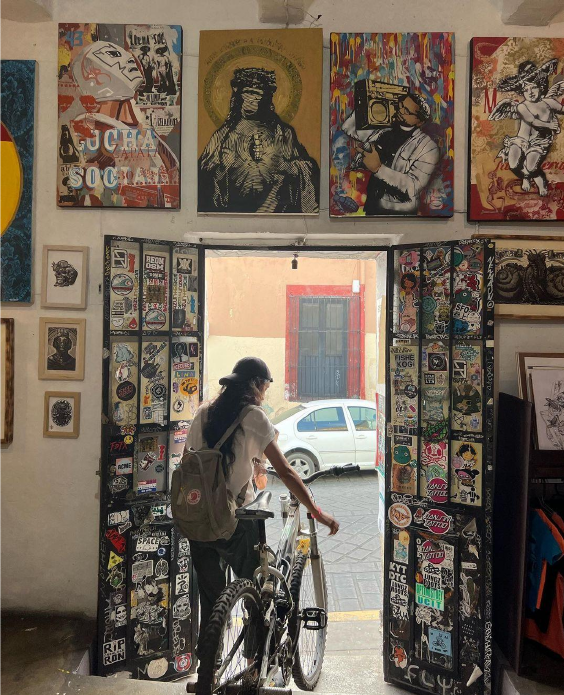

Alicia Paz

Biografía
Soy compositora y programadora nacida en Santiago de Chile. Me inspiro en la poesía y la naturaleza para crear sobre lo que me supera y me conmueve.
En 2018 me titulé como Ingeniera en Recursos Naturales de la Universidad de Chile. Viví dos años en la Isla Grande de Chiloé, donde trabajé como agroecóloga, pastora de ovejas y enseñando a niñxs.
Actualmente estudio composición en la Ciudad de México.
Me puedes encontrar pedaleando por la ciudad cualquier día de la semana.